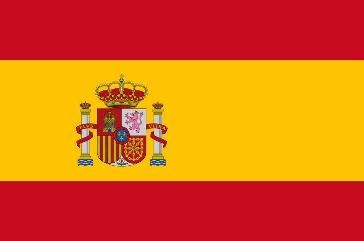
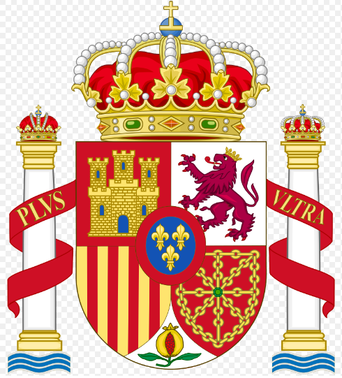
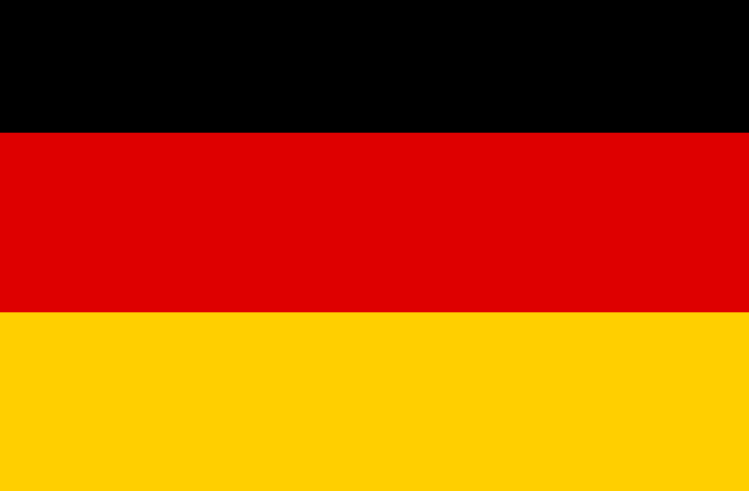
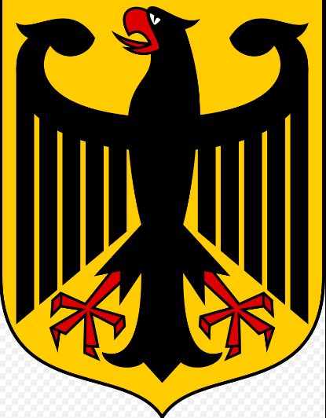
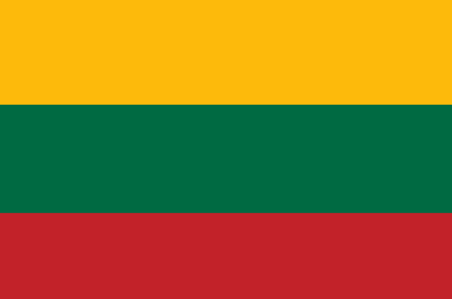
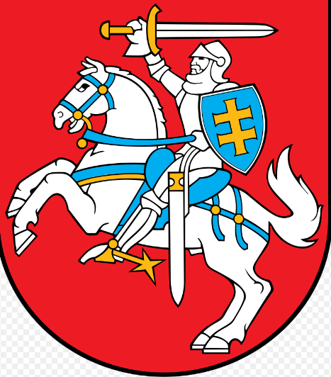

Испания
Испа́ния (исп. España, МФА: [esˈpaɲa]), официально Короле́вство Испа́ния (исп. Reino de España, МФА: [ˈreino ðe esˈpaɲa]) — трансконтинентальное суверенное государство в Южной Европе, имеющая часть территорий в Африке.На юго-западном побережье Иберии в бронзовом веке возникает культура, из которой в конце 3-го тысячелетия до н. э. образуется цивилизация Тартесс, торговавшая металлом с финикийцами. После истощения шахт Тартесс приходит в упадок.Вдоль восточного побережья Испании во 2-м тысячелетии до н. э. появились иберские племена; некоторые гипотезы связывают их прародину с Северной Африкой. В дальнейшем иберы были ассимилированы кельтами. От иберов происходит древнее название полуострова — Иберийский. Испанией землю иберов называли финикийцы. В середине 2-го тысячелетия до н. э. иберы начали расселяться в укреплённых деревнях на территории современной Кастилии. Иберы занимались в основном земледелием, скотоводством и охотой, умели изготовлять орудия труда из меди и бронзы. Иберы использовали палеоиспанское письмо, созданное ранее тартессийцами. Язык иберов не был родственен тартессийскому.
Член Европейского союза и НАТО. Испания занимает бо́льшую часть (80 %) Пиренейского полуострова, а также Канарские и Балеарские острова, имеет общую площадь 504 782 км² (вместе с небольшими суверенными территориями на африканском побережье, городами Сеута и Мелилья), являясь четвёртой по величине страной в Европе (после России, Украины и Франции)В позднем бронзовом веке в Иберию проникает культура полей погребальных урн (остатком которой в исторический период, вероятно, были лузитаны), а в начале 1-го тысячелетия до н. э. большую часть Иберии колонизируют кельтские племена. Часть кельтов, обитавшая по соседству с иберами, попав под их влияние, создала кельтиберийскую культуру; кельты, обитавшие в западной части, сохраняли относительно консервативный образ жизни, были бесписьменными. Кельты Иберии прославились, как воины. Именно они изобрели обоюдоострый меч, впоследствии ставший стандартным вооружением римской армии и использованный против своих же изобретателей.Во время Второй Пунической войны, между 210 и 205 годами до н. э. расширяющаяся Римская Империя захватила Карфагенские колонии в Средиземном Море. На завоевание Римом Испании ушло почти два столетия, и затем на протяжении около шести столетий Испания входила в состав Римской Империи. Императоры Адриан, Траян, Феодосий I, а также философ Сенека родились в Римской Испании. Христианство попало в Испанию в I веке н. э. и стало популярным в городах во II веке
Омывается Атлантическим океаном на севере и западе, Средиземным морем на юге и востоке.Средняя высота поверхности Испании — 650 м над уровнем моря; она является одной из самых гористых стран Европы.Территория разделена на 17 автономных сообществ и 2 автономных города. Столица — МадридОслабление римской юрисдикции в Испании началось в 409 году, когда германские племена Свевы и Вандалы совместно с сарматскими племенами Аланами вошли на полуостров с позволения римского узурпатора. Свевы основали государство в современной Галисии и северной Португалии, а Вандалы основались на юге Испании к 420 году, перешли в северную Африку в 429 году и захватили Карфаген в 439 годуВестготы попадают на Иберийский полуостров в 414—415 годах под предводительством Атаульфа, и в дальнейшем расселяются почти по всей Испании. После падения Западной Римской Империи королевство Вестготов обретает полную независимость. Вестготы, как и другие готские племена, исповедовали арианство. Однако подавляющую часть населения Испании составляли потомки римлян, исповедовавшие ортодоксальное христианство
Германия
Герма́ния (нем. Deutschland [ˈdɔʏt͡ʃlant]), официальное название — Федерати́вная Респу́блика Герма́ния (нем. Bundesrepublik Deutschland), ФРГ (нем. BRD) — государство в Центральной Европе. Площадь территории — 357 408,74 км²[10]. Численность населения на 30 сентября 2019 года — 83 149 300 жителей[11]. Занимает 18-е место в мире по численности населения (2-е в Европе) и 62-е в мире по территории (8-е в Европе).Русское название «Германия» происходит от латинского «Germania», которое восходит к сочинениям античных авторов I века новой эры и образовано от этнонима «германцы» (лат. Germanus). Впервые название было употреблено Юлием Цезарем в «Записках о галльской войне» относительно племён, проживавших за Рейном. Само слово, вероятно, имеет нелатинские корни и происходит от кельтского «gair» («сосед»)[15].По-немецки государство называется «Deutschland» (от прагерм. Þeudiskaz). «Deutsch» (от прагерм. Þeodisk) первоначально означало «имеющий отношение к народу» и подразумевало в первую очередь язык[16]. «Land» означает «земля, страна». Современная форма написания названия страны используется с XV века
Расположенная в центре Европы Германия омывается водами Балтийского и Северного морей. Граничит с Данией на севере, Польшей и Чехией на востоке, Австрией и Швейцарией на юге, Францией, Люксембургом, Бельгией и Нидерландами на западе.По государственному устройству является федеративным государством в составе 16 субъектов(Бавария, Баден-Вюртемберг, Берлин, Бранденбург, Бремен, Гамбург, Гессен,МекленбургВ СССР на русском языке использовалось название «Федеративная Республика Германии». Такая форма, например, использована в «Большой советской энциклопедии». После присоединения в 1990 году Германской Демократической Республики к Федеративной Республике Германия было принято решение по взаимной договорённости правительств Германии и России не склонять слово «Германия» в официальном названии государства[17][18]. Правильно: «Федеративная Республика Германия»[19] (а не «Федеративная Республика Германии»). Сокращение «ФРГ» активно использовалось в СССР и в ГДР и сегодня используется в русском языке. В самой Германии в официальном языке это сокращение (BRD) использовать не принято и употребляется лишь полная форма названия или фраза «федеративная республика» (нем. Bundesrepublik), когда понятно, что речь идёт об этой стране
Померания, Нижняя Саксония, Рейнланд-Пфальц, Саар, Саксония, Саксония-Анхальт, Северный Рейн — Вестфалия, Тюрингия, Шлезвиг-Гольштейн). Форма государственного правления — парламентская республика. Пост Федерального канцлера ФРГ с 22 ноября 2005 года занимает Ангела Меркель (ХДС), с 19 марта 2017 года должность Федерального президента ФРГ занимает Франк-Вальтер Штайнмайер (СДПГ), который выполняет представительские функции в стране.Северная часть Германии представляет собой сформировавшуюся во время ледникового периода низменную равнину (Северо-Германская низменность, самая низкая точка — Нойендорф-Саксенбанде в Вильстермарше[de], 3,54 м ниже уровня моря). Поверхность Северо-Германской низменности сохранила следы древнего оледенения — цепочки невысоких моренных гряд и холмов. Западную часть низменности занимают болотистые низины — марши, образование которых вызвано опусканием платформы. В центральной части страны к низменности с юга примыкают покрытые лесом предгорья, а южнее начинаются Альпы. Самая высокая точка на территории Германии — гора Цугшпитце, 2962 м
Литва
Литва́ (лит. Lietuva [lʲɪɛtʊˈvɐ]), официальное название — Лито́вская Респу́блика (лит. Lietuvos Respublika) — государство, расположенное в северной части Европы. Площадь — 65 300 км²[7]. Протяжённость с севера на юг — 280 км, а с запада на восток — 370 км[8]. Население составляет 2 795 175 человек (январь, 2021)[9]. Занимает 137-е место в мире по численности населения и 121-е по территории. Имеет выход к Балтийскому морю, расположена на его восточном побережье. Береговая линия составляет всего 99 км (наименьший показатель среди государств Балтии). На севере граничит с Латвией, на юго-востоке — с Белоруссией, на юго-западе — с Польшей и Калининградской областью России. По площади и населению является самым крупным прибалтийским государствомСтолица — Вильнюс. Официальный язык — литовский. Денежная единица — евро.Восстановление независимости страны провозглашено 11 марта 1990 года,[10]. 6 сентября 1991 года Государственный совет СССР признал независимость Литвы. Перейти к разделу «#История» Литва — член ООН (1991), ОБСЕ (1991), Совета Европы (1993), ВТО (2001), Европейского союза (2004), НАТО (2004) и ОЭСР (2018). Входит в Шенгенскую зону и Еврозону
Этимология слова «Литва» точно не известна, при этом существует множество версий, ни одна из которых не получила всеобщего признания. Корень «лит» и его варианты «лет»/«лют» допускают различные толкования как в балтских и славянских, так и в других индоевропейских языках. Так, например, существуют созвучные топонимы на территории Словакии «Lytva» и Румынии «Litua», известные с XI—XII веков[11]. По мнению Е. Поспелова, топоним образован от древнего названия реки Летава (Lietavà от лит. lieti «лить», русское «Летаука»). Феодальное княжество, по землям которого протекала эта река, со временем заняло ведущее положение и название было распространено на всё государство. В «Повести временных лет» (XII век) упоминается этноним «литва», полностью совпадающий с названием местности «Литва» и по смыслу (территория, где живёт литва), и по формеПоверхность — равнинная, со следами древнего оледенения. Поля и луга занимают 57 % территории, леса и кустарники — 30 %, болота — 6 %, внутренние воды — 1 %Высшая точка — 293,84 м над уровнем моря — холм Аукштояс (или Аукштасис калнас) в юго-восточной части страны, в 23,5 км от Вильнюса[13].
Территория современной Литвы была заселена людьми с конца X—IX тысячелетия до н. э. Жители занимались охотой и рыболовством, использовали лук и стрелы с кремнёвыми наконечниками, скребки для обработки кожи, удочки и сети. В конце неолита (III—II тысячелетия до н. э.) на территорию современной Литвы проникли индоевропейские племена. Они занимались земледелием и скотоводством, при этом охота и рыболовство оставались основными занятиями местных жителей вплоть до широкого распространения железных орудий труда. Индоевропейцы, заселившие земли между устьями Вислы и Западной Двины, выделились в отдельную группу, названную учёными балтами.Традиционно считается, что этническая основа Литвы сформирована носителями археологической культуры восточнолитовских курганов, сложившейся в V веке н. э. на территории современных Восточной Литвы и Северо-Западной Белоруссии[15]. Около VII века литовский язык отделился от латышского.Становление государственности на территории современной Литвы[источник не указан 239 дней] относят к XIII веку, при этом само название «Литва» впервые упомянуто в Кведлинбургских анналах под 1009 годом в сообщении об убийстве язычниками миссионера Бруно на границе Руси и Литвы (лат. Litua → косв.п. лат. Lituae). По наиболее распространённой, но аргументированно опровергнутой, версии, топоним возник от названия небольшой реки Летаука, притока Няриса[16]. Согласно более современной гипотезе, название страны могло произойти от этнонима «леты» или «лейти», которым жители окрестных земель называли дружинников литовских князей.
